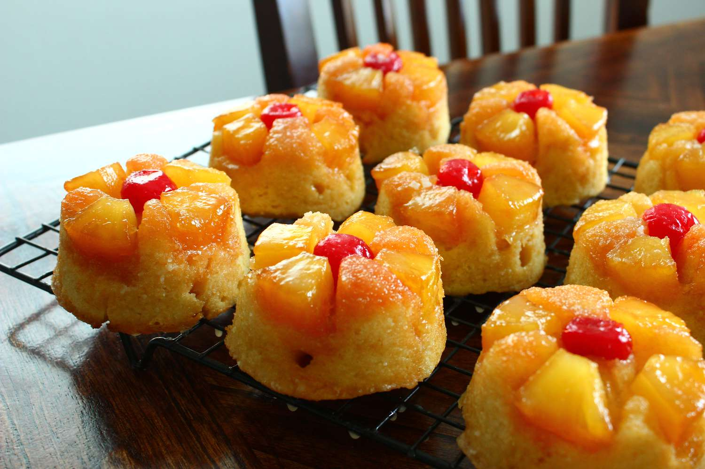

-

Pineapple Upside-Down Cupcake
Ingredients
- Melted Butter - ½ cup
- Cherries - 24
- Pineapple - 1, cut
- Egg - 3
- Pineapple Juice - 1½ cup
- Pineapple Cake Mix - 1
- Brown Sugar - ½ cup
- Non-stick spray
- Vegetable Oil - ½ cup
Method of Preparation
Mix pineapple cake mix, eggs, pineapple juice, vanilla extract and vegetable oil in a bowl.
Grease 24 muffin cups. Add in a teaspoon of butter in each cup, then a cherry, then a pineapple. Pat everything down.
Pour the pineapple cake mix into the muffin cups and bake at 350°F for 20 minutes. Cool for 5 minutes and invert on a wire rack. Sprinkle with powdered sugar.